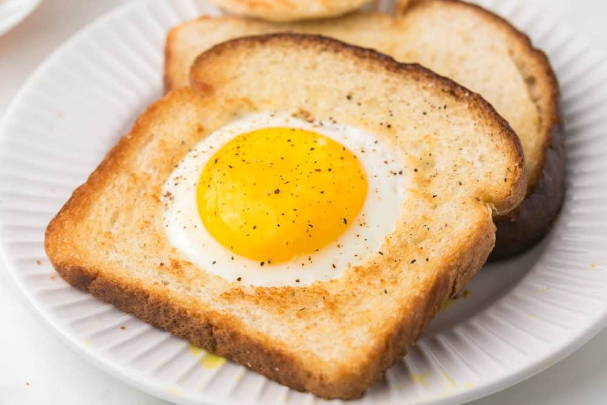

Toad In The Hole
Toad in the hole is a simple, classic breakfast where a hole is cut in a slice of bread, buttered, and then pan-fried with an egg cracked into the opening. It's a fun way to enjoy toast and eggs with a perfect runny yolk.
Ingredients
- Two pieces of white Bread
- Two large Eggs
- Pad of Butter
- Salt and pepper
- Optional: Nutella
Instructions
- In a small skillet, melt the butter.
- Cut a 3-inch hole in the bread and place it in the skillet.
- Crack the eggs into the holes. Cook for 2 minutes until browned.
- Turn and cook the other side until set. Season to taste.
- Optional: Use a spoonful of Nutella between the two circle "scraps" for a sweet treat!